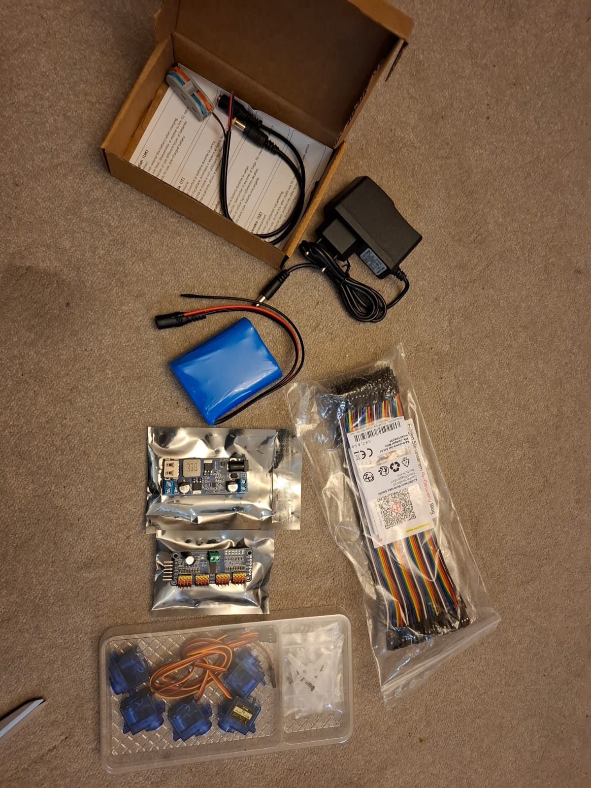
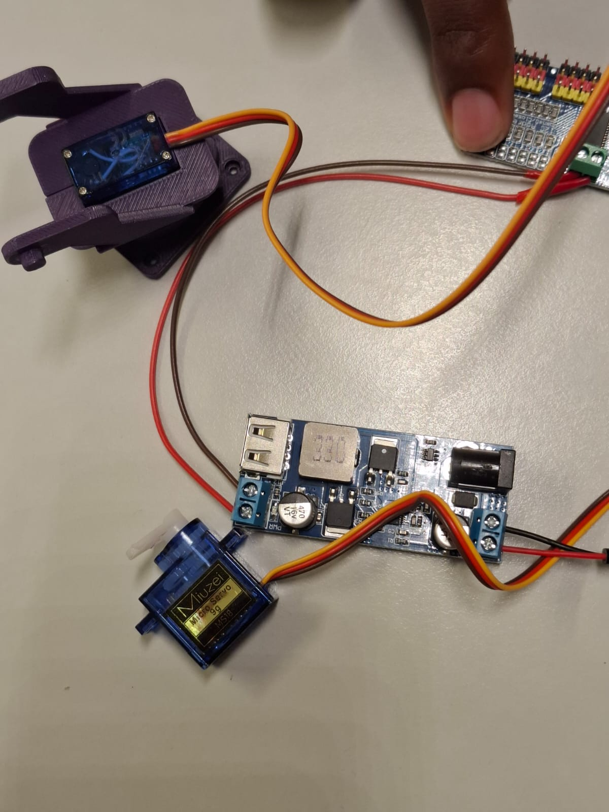
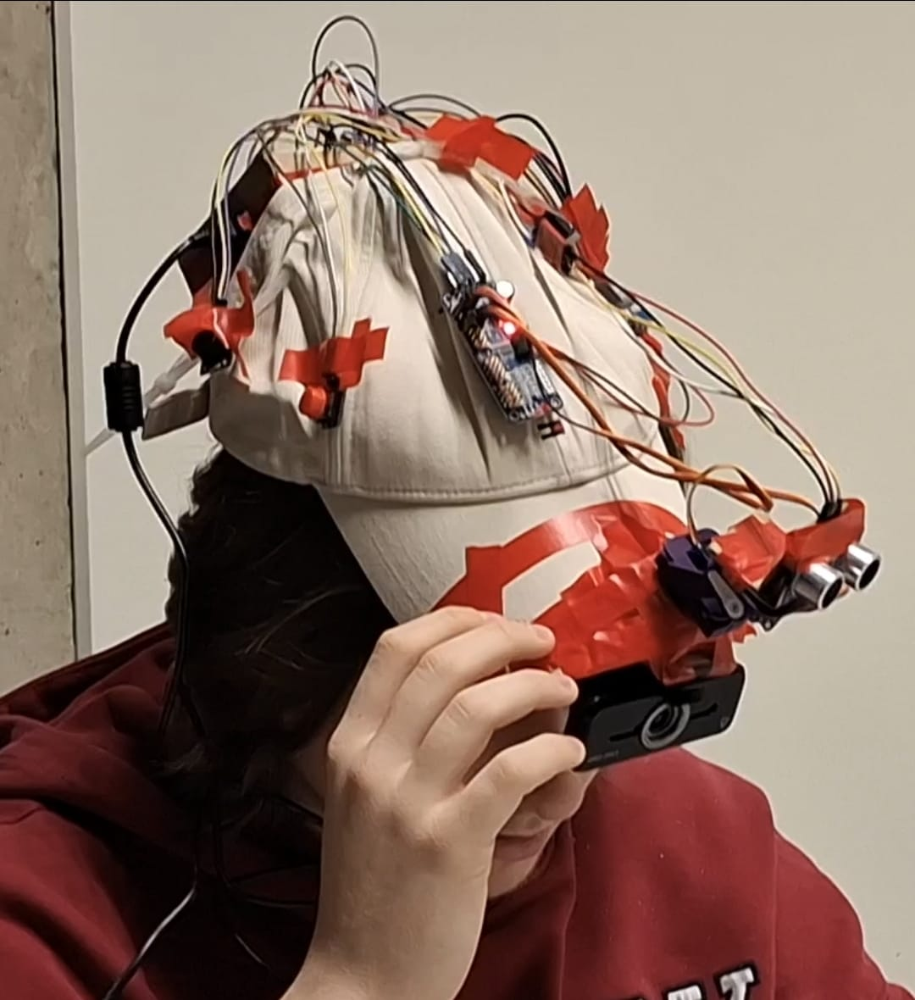

I-SPI
A head-worn assistive prototype designed to help visually impaired people locate nearby objects using voice commands, computer vision and sound cues.

The Challenge
We designed I-SPI to help people with visual impairments find objects on a table or elsewhere within reach. The user names what they are looking for, and the wearable device uses sound to guide them towards it. We also wanted to experiment with different types of sensors to learn how they could work together to detect an object, determine its position and measure its distance. Our goal was to make small, everyday tasks easier and support greater independence.
The Approach
After the user presses a button and names an object, speech-to-text passes the request to an object-detection model. The camera locates the object in its view, and its position controls the left and right buzzers. A servo aims the ultrasonic sensor towards it; as the measured distance decreases, the buzzers beep faster. We also tested voice authentication to help prevent someone else from using the device.


The Tools
We used a Raspberry Pi to run Vosk for speech-to-text and YOLO-E for object detection. The hardware included a microphone, camera, ultrasonic distance sensor, servo motors and buzzers for directional feedback.
The Outcome
We assembled a wearable prototype and manually tested object detection, servo movement, distance measurements and buzzer feedback. The project showed how these parts could work together, while also revealing practical challenges with the sensors, servos, weight and cable management. A lighter build, more reliable speech recognition and a wider angle camera would be valuable next improvements. This project strengthened my leadership skills and taught me the importance of understanding a project from end to end. I enjoyed balancing the bigger picture with the technical details so I could support the team and help us make informed decisions.
